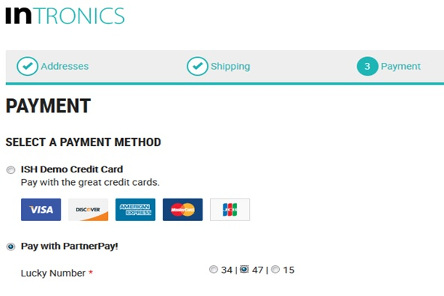
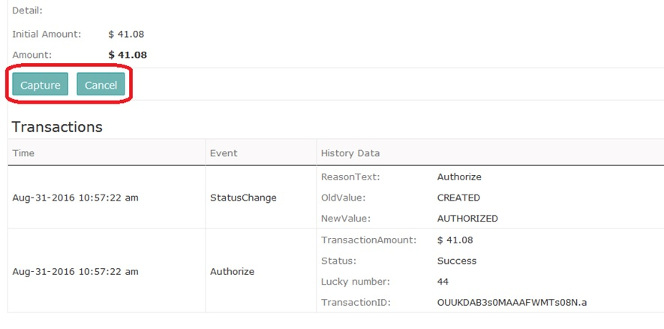

Introduction
Welcome to PartnerPay!
PartnerPay is an open source blue print payment connector compatible with ICM7.6+ and the responsive inSPIRED demo shop. This payment method is created only for educational purposes. To experiment with PartnerPay you may integrate its sole cartridge into your own assembly or deploy it within the included inspired-partnerpay assembly.
The source code of PartnerPay will be discussed on the Intershop developer conference which will take (or took) place in Jena, on September 29th, 2016.
PartnerPay is designed to be learner friendly. It contains:
- Simplified use cases
- Mocked communication with external systems
- Good amount of code snippets
- Sample Junit/Mockito tests
- Extensive usage of dependency injection
- Various design patterns used in production integrations
Please feel free to experiment, reuse, contribute.
Functionality
PartnerPay demonstrates:
- Direct authorization
- Pending transactions and asynchronous notifications
- Cancel operation (with conditional availability)
- Capture operation
- Payment applicability checks
- Payment history creation
- Error handling
- Implementation of custom property groups
Screenshots
Checkout

Order confirmation

Backoffice
